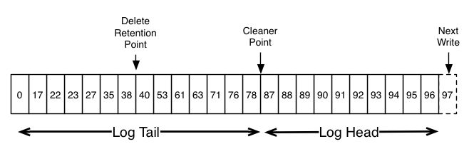

日志压缩（Log Compaction）
日志压缩确保Kafka总是至少保留一个主题分区数据日志中每个消息key的最新的已知值。它解决了诸如应用崩溃或者系统故障后还原状态、或者应用在运营维护期间重启后重新加载缓存的使用场景和方案。
目前只描述了比较简单的数据保留方式，老的日志数据在一个固定的时间段后，或者日志达到预定的大小时废弃。对于临时时间数据运行良好，比如每条日志记录相互独立的日志场合。但是，一类重要的数据流是按key的（keyed）、易变数据的变化日志（比如，数据库表的改变）。
假如，有一个主题包含了用户的邮件地址；用户更新邮件地址时，使用用户id作为主键发送一条消息到这个主题。现在，在一段时间内，使用用户id 123发送了如下消息，每条消息对应于一次邮件地址变更（忽略其它ids的地址变更）：
123 => bill@microsoft.com
.
.
.
123 => bill@gatesfoundation.org
.
.
.
123 => bill@gmail.com
日志压缩，提供了一个更加精细的保留机制，保证可以至少保留每个主键的最新更新（比如bill@gmail.com）。通过这个机制，可以保证日志包含了每个key（不仅仅是最近改变的那些keys）的最终值得全部快照。这意味着下游的消费者可以从这个主题恢复它们的状态，而不用Kafka保留所有改变的完整的日志。
使用场景：
- 数据库变化的订阅。经常会有必要把数据集保存在多个数据系统中，通常包括数据库（RDBMS或者key-value存储）。比如，一个系统包括数据库、缓存、搜索集群、Hadoop集群。数据库的改变需要反映到缓存、搜索集群、以及Hadoop。如果只处理实时更新，则只需要最近的日志。但是，如果要能够重新加载缓存或者恢复故障的搜索节点，那就需要完整的数据集了。
- 事件采集（event sourcing）。这是一种应用设计风格，把查询处理与应用程序设计放在一起，并使用变更日志作为应用的主要存储。
- 高可用日记（journaling for high-availability）。进行本地运算的进程可以变得容错，通过把这个进程对它的本地状态的改变记录到外部，这样另一个进程在这个进程故障时可以重新加载这些改变并继续执行。一个具体的例子是流查询系统中的counts、aggregations、和其它类似”group by“的处理。Samza，一个实时的流处理框架，使用这个特性来用于这个目的。
这些应用场景中的每一个需要主要地处理变化的实时馈送，但是，偶尔，当机器崩溃或者数据需要重新加载或者重新处理的时候，需要进行全量加载。
如果有无限制的日志保留，并且记录上面场景的每个变化，那么从系统开始就获取了每时每刻的状态。使用这个完整的日志，可以恢复到任意时间点。这种假想的完整日志对于更新一条记录很多次的系统是不实际的，因为即使对于稳定的数据集日志也会增长的没有边界。抛弃旧的更新的简单的日志保留机制可以限制空间，但是日志已经不再适用于恢复某刻的状态——因为当时的状态可能不存在了。
日志压缩是提供更细粒度的每条记录保留的机制，而不是基于时间保留的粗粒度的。这种机制在相同的主键具有更加新近的更新时有选择地移除记录。这样，日志可以保证至少拥有每个key的最新状态。
这种保留策略可以每个主题地设置，所以一个集群可以有一些主题的日志保留是按照大小或时间进行的，而另一些主题的日志保留是按照日志压缩进行的。
这种功能是受到LinkedIn的数据库改变日志缓存服务Databus的启发。与大多数的日志结构的存储系统不同，Kafka为订阅目的和组织数据以进行快速的线性读写的目的而构建的。与Databus不同，Kafka是作为事实真相（source-of-truth）存储的，所以它是有用的，即使上游数据源不能再重播。
1、日志压缩基础
带有每条消息偏移的Kafka日志的逻辑结构图

日志头于传统的Kafka日志相同。它有一个密集的、顺序的偏移，并且保留所有的消息。日志压缩增加了一个处理日志尾的选项。这个图显示了一个具有紧凑日志尾的日志。注意，日志尾的消息保留了消息被写到日志中时分配的原始偏移——永远不会改变。也要注意，在日志中所有的偏移都是有效地，即使具有那个偏移的消息被压缩掉了；这种情况下，这个位置与该日志中下一个最大的偏移是难以区分的。比如，上图中的偏移36、37和38都是等价的位置，从这三个偏移中任何一个开始读取都会返回从位置38开始的消息集合。
压缩也允许删除。有一个key和一个null的有效载荷的消息会被当作从日志的删除。这个删除标识会导致具有这个key的所有先前消息被删除（像具有这个key的任何新消息一样），但是删除标识有一个特别的地方——它们会在一段时间后自行被清理出日志以释放空间。在上图中，删除标识不再被保留的时间点被标记为”delete retention point“。
压缩是通过在后台周期性地重新复制日志片段完成的。清理不会阻塞读操作，并且可以被限制为使用不超过一个可配置量的I/O吞吐量，以避免影响生产者和消费者。实际的压缩日志片段的处理类似于下图：

2、log压缩提供的保证
日志压缩保证：
- 任意与日志头保持同步的消费者都会看到写入的每条消息；这些消息有顺序的偏移。主题的
min.compaction.lag.ms可以用于保证消息被写入后到消息可以被压缩的最小时间。即，它提供了一个每条消息会保留在日志头的时长下限。主题的max.compaction.lag.ms可以用来确保消息被写到日志到消息可以被压缩的最大延时。 - 消息的顺序是一直维持的。压缩不会对消息重新排序，只会删除一些消息。
- 消息的偏移是永远不变的。消息的偏移是日志中某个位置的永远的identifier。
- 任意从日志开头读取的消费者，都会以消息被写入的顺序看到至少所有记录的最终状态。另外，只要消费者在小于
delete.retention.ms（默认24小时）设置的时间段内到达日志头，删除记录的所有删除标识是可见的。即，如果删除标识的移除和读操作同时发生，并且延时超过delete.retentions.ms，消费者可能会错过删除标识。
3、日志压缩
日志压缩是通过日志cleaner处理的，一个后台线程池，重新复制日志片段文件、移除key出现在日志头中的记录。每个日志压缩器（compactor）线程工作流程如下：
- 选择日志头日志尾比最高的日志。
- 创建一个日志头中每个key的最新偏移的简要总结。
- 从头到尾重新复制日志，移除在日志中具有更新出现记录的key。新的，整洁的片段被立即地交换到日志中，所以需要的额外的硬盘空间只是一个额外的日志片段（而不是日志的整个拷贝）。
- 日志头的总结仅仅是一个空间紧凑的哈希表。每一个条目只有24字节。结果是，使用8GB的cleaner缓冲，一次cleaner迭代可以清理大约366GB的日志头（假如每条消息1kb）。
4、配置日志cleaner
日志清理器默认是开启的。它会启动清理器线程的线程池。如果要启动特定主题的日志清理，增加日志专用属性：
log.cleanup.policy=compact
属性log.cleanup.policy是定义在代理的server.properties文件中的一个代理配置设置，如果没有主题配置覆盖它，它会影响集群中的所有主题。
日志清理器可以被配置为保留最少量的未压缩的日志头。通过设置压缩时间延迟来启用：
log.cleaner.min.compaction.lag.ms
这可以被用来防止比最小的消息年龄更新的消息被压缩。如果不设置，除了最新片段（即，当前正在写的片段）外的所有的日志片段都会被压缩。活跃片段不会被压缩，即使它的所有消息都比最小压缩延时要大。
日志清理器可以被配置为确保一个最大的延迟，过了这个延迟后未压缩的日志头会变得可以被压缩。
log.cleaner.max.compaction.lag.ms
这可以被用来防止低生产率的日志无限制时长的一直不会被压缩。如果不设置，不超过min.cleanable.dirty.ratio的日志不会被压缩。注意，这个压缩最后期限不是一个硬性的保证，因为它服从于日志清理器的可用性和实际的压缩时间。还需要监控指标：不明分区数量、最大清理时间秒数和最大压缩延迟秒数。